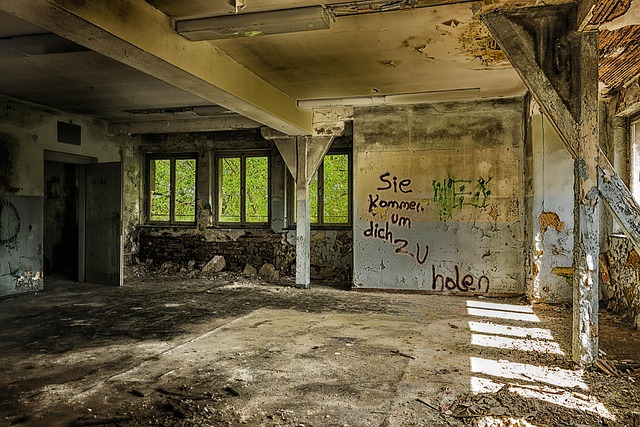
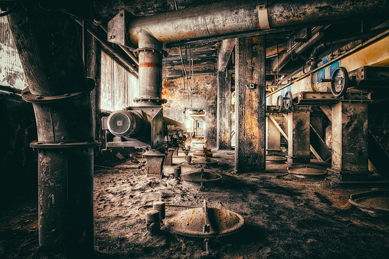
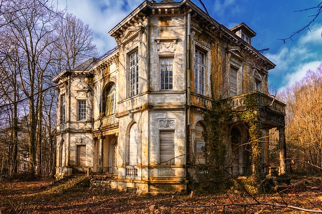
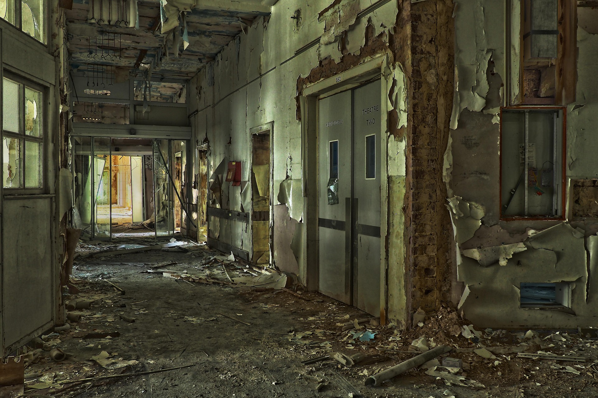
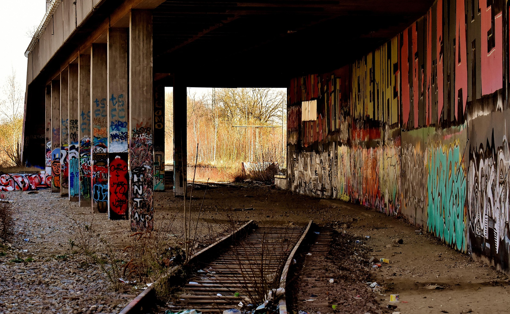
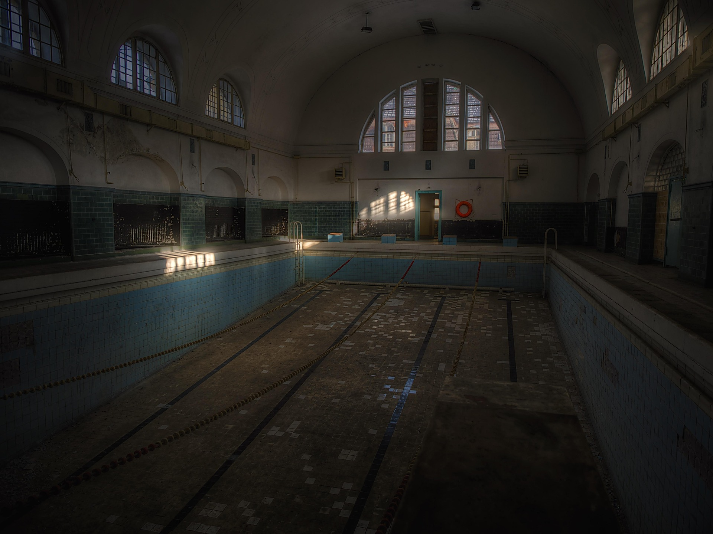
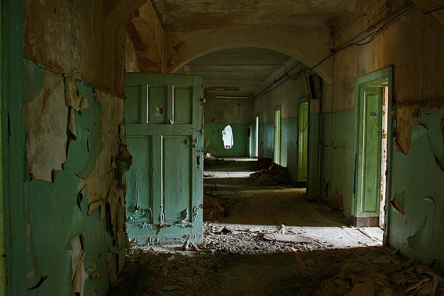

Ein Archiv für überwucherte Orte, vergessene Räume und die Echos vergangener Geschichten.

hallen
industrie
villen
villen
Bahnhof verlassene räume
verlassene räume
Stadtbäder zuglinien im stillstand
zuglinien im stillstand
architekturfragmente
ECHORUIN ist ein digitales Archiv vergessener Orte.
Es sammelt, dokumentiert und bewahrt Lost Places – überwucherte Räume,
verlassene Gebäude und die stillen Echos ihrer Geschichten – auf einer modernen, interaktiven Karte.
Der Fokus liegt auf Dokumentation, nicht auf Erkundung.